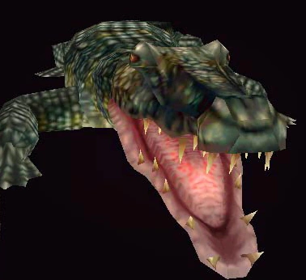

Origen
Es un enemigo enorme y bastante resistente que habita en las alcantarillas de Raccoon City en la zona del vertedero. Puede aparecer en el escenario A y en el B. En el escenario B aparecerá si este se escapa en el escenario A.

Es un enemigo enorme y bastante resistente que habita en las alcantarillas de Raccoon City en la zona del vertedero. Puede aparecer en el escenario A y en el B. En el escenario B aparecerá si este se escapa en el escenario A.
En el juego, el caimán gigante es un enemigo que aparece en las alcantarillas de Raccoon City. Los jugadores deben enfrentarse a él para avanzar en la historia y escapar de las alcantarillas.
Cuando aparezca el caimán, lo más recomendable es huir de la criatura hasta llegar al tanque explosivo en la pared. En ese lugar se deberá esperar a que aparezca el caimán y usar el tanque, el cual caerá de la pared y será agarrado por el caimán, en ese momento se deberá disparar al tanque y este explotará matando a la criatura. También se puede luchar contra la criatura sin hacer uso del tanque explosivo, en este caso se deberá atacar con armas pesadas como el lanzagranadas de Claire o la magnum de Leon. Después de varios disparos, la criatura romperá una pared y huirá por ella. Si esto ocurre, el caimán reaparecerá en el escenario B.